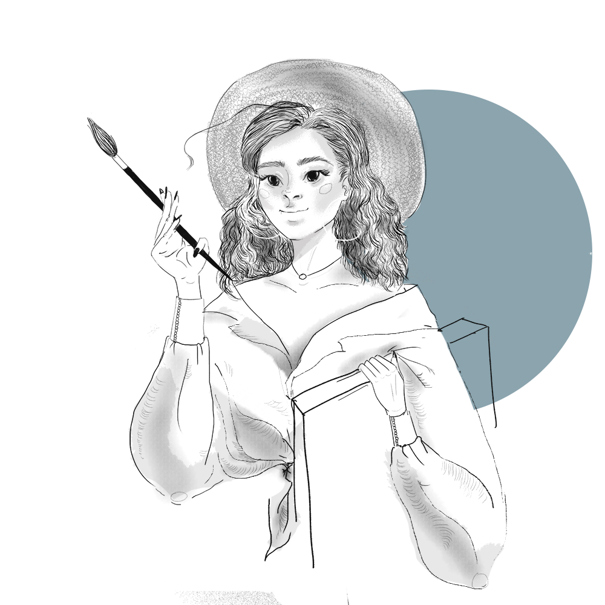

.toradorrra
. Добро пожаловать
Данная страница предназначена для знакомства со мной, Викторией, и для просмотра моих работ. В разделах можно узнать поближе меня и узреть творения мои. Также, сайт целиком и полностью отрисован мной.

. мои навыки
Проценты указаны приблизительно и относительно. Также, я готова к изучению чего-то нового, поэтому данный список далеко не окончательный.